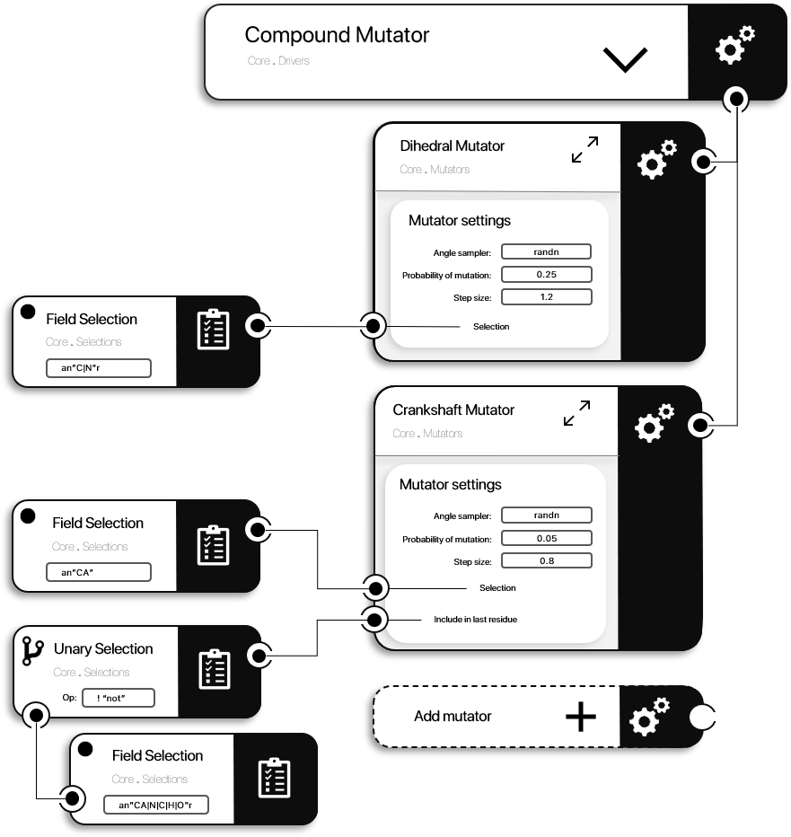

Mutators section
Each module in ProtoSyn may include a Mutators section, containing types and methods allowing ProtoSyn to change a Pose instance's from one State to another. In other words, a Mutator (of type AbstractMutator) is responsible for implementing a given conformational change in a Pose (for example, implementing Dihedral rotations, among others). In the context of a simulation, this is usually refered as "sampling". In the next section, a further exploration of the available AbstractMutator instances is provided, organized in the following sections:

Figure 1 | A diagram of an example CompoundMutator, bringing together multiple AbstractMutator instances. In this example, both the DihedralMutator and the CrankshaftMutator are represented. Each AbstractMutator can be parametrized by a collection of settings, explained in each Mutator's page in this manual. In the case of the exemplified AbstractMutator instances, these can receive an optional selection (in the example the FieldSelection and UnarySelection are shown).
Creating custom mutators
Mutators are most useful when employed in a Driver instance (see Drivers section), who expects the following signature. Note that the Mutator instances are struct instances (of type <: AbstractMutator), but are also functors, meaning that are callable by the encompassing Driver. For this call, only a Pose pose instance is given as input, and all conformational changes should be in-place (no output is expected and any internal to cartesian coordinate conversion, or vice-versa, should be requested at the end of the function call). Note that, as a general rule, AbstractMutator instances should sync! any required internal to cartesian coordinate conversion (or vice-versa) at the start of the function call (using i2c! or c2i! methods). As an example, DihedralMutator syncs any pending cartesian to internal coordinate conversion before applying itself, as it will apply changes to the internal coordinates. In the same fashion, at the end of the function call, AbstractMutators should request any internal to cartesian coordinate conversion (or vice-versa), depending on the change performed, therefore requesting a pending sync!. However, AbstractMutators should not sync!, in most cases. As an example, ten sequential DihedralMutator calls do not require a sync! between each of them.
struct NewMutator <: AbstractMutator
# content
end
function (mutator::NewMutator)(pose::Pose)
# content
endIn order to be able to incorporate any new custom mutator in a CompoundMutator, an extra signature needs to be present, receiving a subset list of Atom instances. In this case, the mutator should only be applied to the Atom instances in this subset.
function (mutator::NewMutator)(pose::Pose, atoms::Vector{Atom})
# content
endAvailable mutators
Besides all the machinery to create custom mutators, ProtoSyn's Core module makes available some simple AbstractMutator instances. Since this is not a specialized module, available mutators should be indiferent to the type of molecular structure being sampled. As of ProtoSyn 1.1, the following AbstractMutator instances are made available from the Core module, and can be further explored in the respectivelly dedicated pages of this manual: